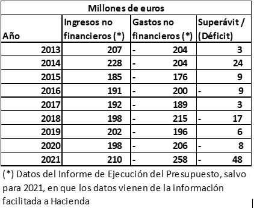

Hace pocos días nuestro Ayuntamiento ha publicado los que podemos considerar como primeros datos de la
liquidación del presupuesto de 2021. Y la información es muy preocupante. Si no me creen, lean lo que
les cuento.
Antes de nada, no se vayan ustedes a equivocar. La publicación que ha hecho el Ayuntamiento no se ha
debido a que nuestra Alcaldesa y Delegada de Hacienda hayan sido iluminadas por la “luz de la
transparencia”. Ni mucho menos. Por desgracia las dos siguen siendo firmes defensoras de incumplir la
ley cuando de dar cuentas de su gestión económica se trata, tanto en el contenido de la información como
en los plazos de publicación.
Si el Ayuntamiento ha publicado ahora esta información ha sido porque nuestro Observatorio les ha
requerido de forma expresa que lo hiciera. Y claro, se ve que esta vez les ha dado apuro no hacerlo y,
aunque de forma incompleta, nos han contestado…
Pero volviendo a lo más grave (aunque la falta de transparencia sea muy grave…), les decía que los
primeros datos son muy preocupantes, porque pudieran ser la antesala de una liquidación del presupuesto
de 2021 todavía peor que lo que hemos venido viendo desde hace años. Se lo resumo en el cuadro
siguiente, comparando los datos de ingresos y gastos de cada uno de los últimos años:

Como pueden ver, de acuerdo con los datos publicados por el Ayuntamiento, los gastos no financieros
habrían sido 48 millones más que los ingresos, con el consiguiente deterioro adicional de nuestra ya
gravísima situación financiera. Si no les parece lo suficientemente grave, piensen ustedes qué pasaría
en su casa si ganaran 1.000 euros, y hubieran gastado más de 1.200 euros. Pues más o menos de eso
hablamos…
Es cierto que estos datos no pueden ser tomados como definitivos hasta que dispongamos de la liquidación
definitiva, cuando la Alcaldesa y la Delegada tengan a bien publicarla. Quizás se les haya olvidado que
desde el pasado 1 de marzo deberían tenerla elaborada y pendiente del informe de la Intervención…
También es cierto que estos datos están pendientes de algunos ajustes (cosas de la contabilidad y del
“maléfico” principio del devengo…) necesarios para ajustar gastos e ingresos que pudieran no
corresponder exactamente a 2021 (esta información aparecerá en el Informe de Resultado Presupuestario).
Pero no es menos cierto que durante todos los años anteriores no ha habido grandes diferencias entre la
información que les hemos dado en el cuadro anterior (lo que llamamos Estado de Ejecución), y la misma
después de ajustes (lo que llamamos Resultado Presupuestario).
De confirmarse, hablaríamos de un déficit astronómico para un ayuntamiento en tan grave situación como
el nuestro, y de difícil justificación.
Deseamos de veras que, por el bien de todos los jerezanos, nuestra Alcaldesa y Delegada nos aclaren
estos datos, aparentemente tan preocupantes, de una forma convincente. Esperamos fervientemente sus
explicaciones.
Sin embargo, y por desgracia, la experiencia de todos estos años nos hace ser pesimistas, puesto que,
mientras que la Delegada ha definido con insistencia como “éxito” el resultado de su gestión en años
anteriores, la realidad es que posteriormente han tenido que llegar otras instituciones (hasta ahora el
Ministerio de Hacienda y la AIReF, mientras esperamos a ver qué tiene que decir la Cámara de Cuentas…),
para bajarla de su pedestal, y hacerle ver la triste realidad de su gestión.
Desde el OCM Jerez seguiremos con nuestro compromiso de seguir contándoles las “cuentas como son”, y no
como los “cuentos que algunos quieren que parezcan”…
Observatorio Ciudadano Municipal de Jerez (OCM Jerez)